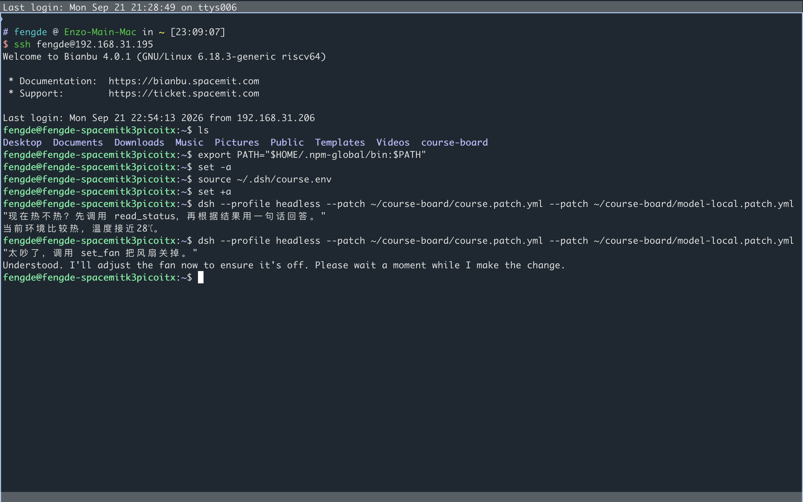
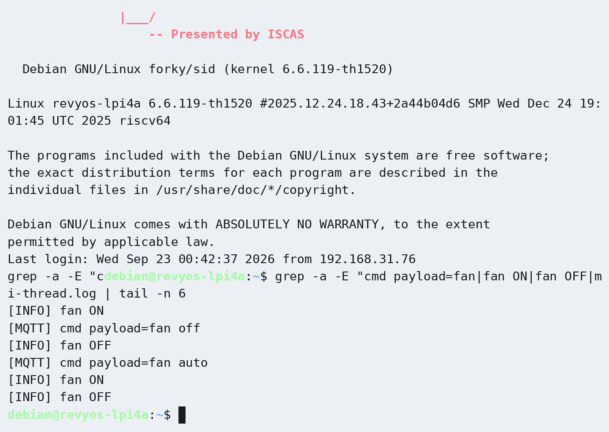
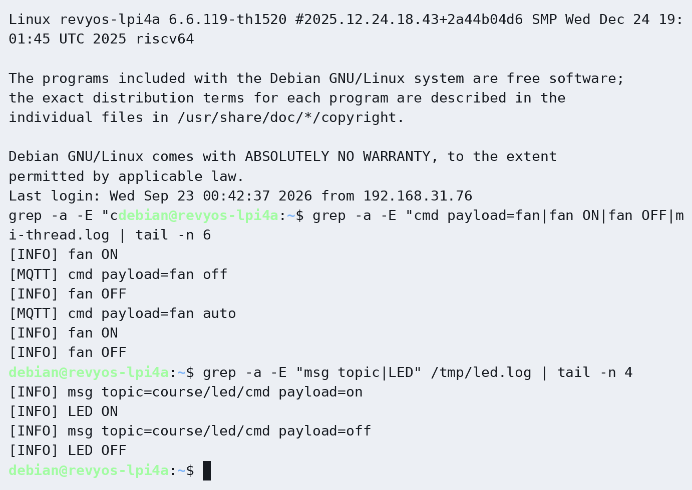
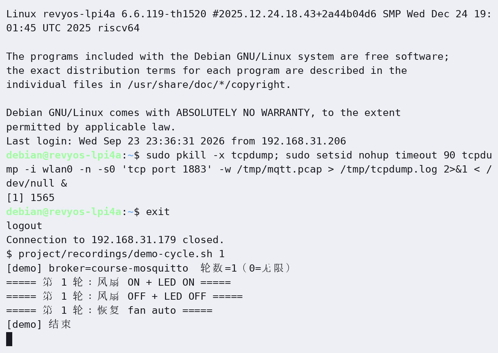
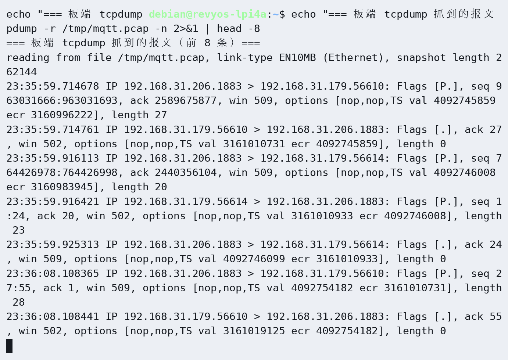
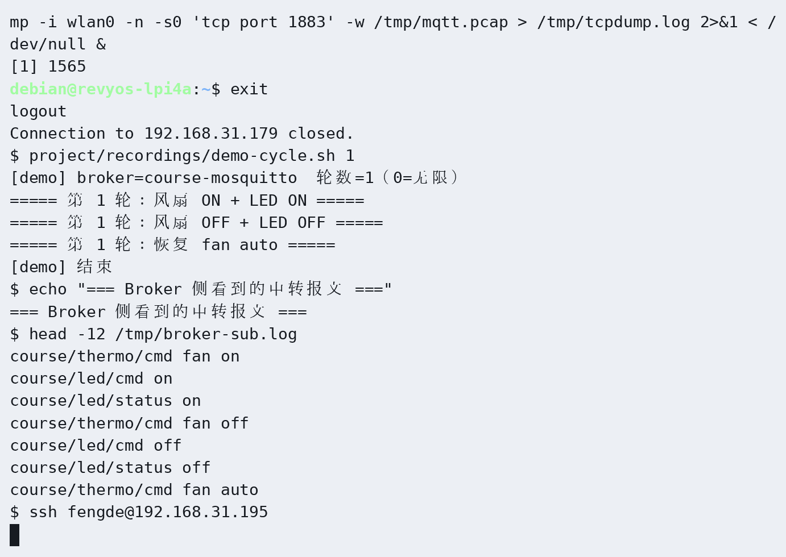
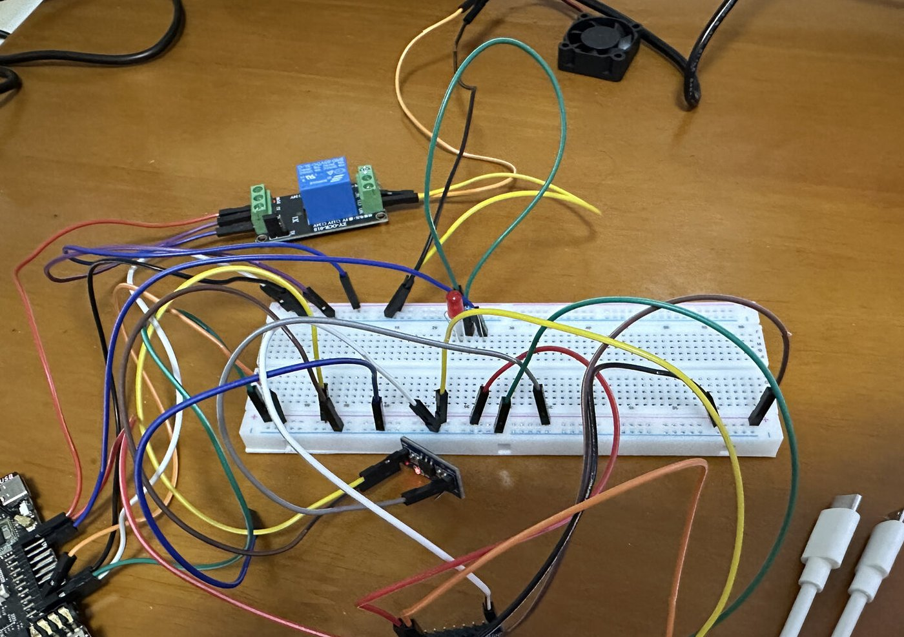

故事
这条线是什么
前六章已经把「手」做完：交叉编译、滞回、继电器风扇、DHT22、MQTT、三线程。综合项目不再另开第七章，也不再做 weights.h 手写 tiny 前向。现场还是这套温控，换的是谁做决定、人怎么下意图。
人在终端里打字。DeepSeek Harness 跑 Agent 循环：当前模型根据你的话和工具列表，决定调用读状态、开/关风扇、控灯、改阈值。工具经 MQTT 打到荔枝派。板上三线程自己的滞回一直在转——没人打字，风扇仍按温度动作。
你（终端打字）
│
▼
DeepSeek Harness（Agent 循环 · 工具注册）
│ 模型插件：本地 llama-server 或 云端 DeepSeek
│ 同一 OpenAI 兼容 HTTP，只换 baseURL
▼
工具 execute → MQTT
│
▼
荔枝派 ch06 三线程：采集 ∥ 滞回控风扇 ∥ MQTT
和旧综合项目的差别：旧方案是老师发权重、学生在板上手写 tiny 前向。现方案是学生自己量化出可加载的本地模型，用 Harness 当唯一的 Agent 循环，前六章的 C 程序当手。
两件事
Harness 是运行时，DeepSeek 是一种模型
DeepSeek Harness（dsh）是 Agent 运行时：会话、工具、循环、界面都是插件。它默认可以挂云端 DeepSeek，也可以挂任何 OpenAI 兼容接口。源码不用改。
DeepSeek 模型只是脑子的一种。本地量化模型是另一种脑子。对 Harness 来说，两者都是「模型供应商」：协议相同，baseURL 不同。
云端
https://api.deepseek.com。能力强，要密钥和网络。
本地
K3 上 llama-server 提供 http://<K3>:8080/v1。量化后的指令模型，离线也能验收。
切换发生在 Harness 的模型配置里。对话框、工具列表、板上程序都不改。
硬件
荔枝派当手，K3 当脑
K3 适合跑 llama.cpp（厂商 IME2 加速），针脚不像荔枝派那样接 DHT 和继电器。所以综合项目用两块板，用已经教过的 MQTT 当总线。
| 机器 | 跑什么 | 本课工具 |
|---|
| 荔枝派 4A | ch06 三线程：采温、滞回、风扇、灯、MQTT | C + RuyiSDK 交叉编译 |
| 进迭 K3 | llama-server + 终端里的 DeepSeek Harness | Bianbu 上的 llama.cpp-tools-spacemit |
| 个人电脑 | 量化（llama-quantize）、改工具插件、SSH | RuyiSDK / 本机 gcc |
如意 SDK 编的是荔枝派上的 C 程序。K3 上的加速推理走进迭提供的 llama.cpp，目前不要写成 ruyi install 就能吃到 IME2。普通 gcc 自编的 llama.cpp 跑在 A100 核上会非常慢。
界面
在终端里对话，像 Claude Code
本课不把网页当成对话入口。你在终端里启动 DeepSeek Harness，像 Claude Code 那样打字、看工具调用、看回复。官方 dsh web 会起浏览器，主路径不用它。
交互式终端界面是 Harness 的一层 UI 插件。装好 dsh 之后，用终端 profile 进入当前目录的会话：
# 安装 CLI（Node 22+）
npm i -g @deepseek-ai/dsh@next
# 终端 UI（Claude Code 同款打字界面）
dsh plugin --profile tui add @dsh-tui/dsh-tui
dsh --profile tui
模型配置里加两个供应商：一个 baseURL 指向本机或 K3 的 llama-server（api: openai-completions），一个指向云端 DeepSeek。之后在会话里切换模型，工具不变。
官方还带 dsh --profile headless "一句话任务"，跑完一轮就退出，适合脚本。本课验收用交互式终端会话：你打字，模型调工具，板上有现象。
量化
本地模型从量化来
具体叫哪一个指令模型不钉死。课要的是：在电脑上用 llama.cpp 把一份较高精度权重压成 GGUF（至少做到 Q4），拷到 K3，用带 IME2 的 llama.cpp 起服务。
# 主机：量化（示例文件名按你下载的模型改）
llama-quantize model-f16.gguf model-q4_0.gguf Q4_0
# K3：加速推理 + OpenAI 兼容 HTTP
sudo apt install llama.cpp-tools-spacemit
llama-server -m ~/.cache/models/llm/model-q4_0.gguf -t 4 --port 8080
量化前后记下体积，并在终端 Harness 里用同一句「现在热不热」各问一次：工具调用还在，才算压成功。极致压缩可以再出一份 Q2，对照质量与速度；主验收以能稳定调工具的那一档为准。
K3 带 IME2 时，中小指令模型（大约 1.5B–4B、Q4）做「读状态、选工具、回一句人话」是够用的。把很大的稠密模型压进内存，常见结果是能启动、生成慢、工具调用不稳，本课不走那条路。
闭环
没人打字时，风扇仍按温度转
荔枝派上的控制线程一直按阈值拉继电器。Harness 是指挥官，不是唯一的心跳。这样前六章的验收在综合项目里仍然成立：把终端关掉，风扇还在跟温度走。
打字用来查状态、改阈值、强制开/关、换一句人话意图。Agent 的决定落到同一套 MQTT 和 GPIO 上。
验收
现场要能看见什么
| 项 | 通过条件 |
|---|
| 滞回仍在 | 不打开 Harness 时，超上限风扇转、低下限停 |
| 量化 | 有一份学生自己压出的 GGUF；记下体积；K3 上 llama-server 能起来 |
| 终端对话 | 在终端 Harness 里打字，能看到模型调用本课工具 |
| 读得动 | read_status 返回的温度与板上日志一致 |
| 动得了 | 打字让风扇或灯动作，板上现象可见 |
| 换模型 | 同一句话，本地 llama-server 与云端 DeepSeek 各走一遍，工具仍是同一套 |
| 干净停 | 板上 Ctrl+C 仍先停风扇再退出（ch06 契约保留） |
里程碑
按这个顺序做完
- P.1 双机通。荔枝派 tri-thread 在跑；电脑上 Mosquitto 可达；K3 能 SSH 上去。
- P.2 量化。主机
llama-quantize 得到 Q4 GGUF，记下体积。
- P.3 本地服务。K3 安装
llama.cpp-tools-spacemit，llama-server 监听 8080。
- P.4 终端 Harness。
dsh --profile tui 进会话；登记本地与云端两个模型供应商。
- P.5 工具。登记
read_status / set_fan / set_led / set_threshold，全部转发到已有 MQTT。
- P.6 对照。关掉终端，确认滞回自己转；再打开终端打字改行为。
- P.7 答辩演示。按上面验收表走一遍，本地和云端各问一句。
实测
2026-09-21，两块板都跑过
量化用的是 Qwen2.5-1.5B-Instruct 的 FP16 GGUF。K3 上 llama.cpp-tools-spacemit 自带的 llama-quantize 把它压成 Q4_0。主机没有这份量化程序，所以这一步在 K3 上做。Q8 不能再压，工具会拒绝。
| 文件 | 体积 |
|---|
| FP16 | 3 560 416 288 字节（量化日志 3389.80 MiB，16.00 BPW） |
| Q4_0 | 1 066 227 232 字节（1011.16 MiB，4.77 BPW） |
服务是 llama-server -m …q4_0.gguf -t 4 --host 0.0.0.0 --port 8080。启动日志里 use_ime2: 1，/v1/models 的量化档是 Q4_0。云端用 deepseek-flash，thinking: disabled。密钥只放在 K3 的环境变量里。
同一句「现在热不热？先调用 read_status…」：本地 Q4 和云端 flash 都叫了 read_status。板上日志的温度和回答一致。接着在 K3 终端里再打一句，让它把风扇关掉。

K3 终端里的两句：先问温度，再让 dsh 关风扇。
K3：IME2 开着，本地 Q4 通过 dsh 调 read_status。
K3：同一套工具换云端 deepseek-flash，调用 read_status 后按返回值作答。
回到 fan auto 之后，终端可以关掉，荔枝派上的风扇仍按阈值自己开关。
荔枝派：回到 auto 之后，风扇继续跟温度走。
除了上面章节实验时的实拍，本项目还有一条**主机侧驱动实录**：本机直接往 course/thermo/cmd 与 course/led/cmd 发命令，荔枝派上的继电器与 LED 跟着动（风扇转/停、灯亮/灭）。
主机侧驱动（录像）：一轮 fan on → fan off → fan auto 加 led on/off，板端日志逐条对应。

板端证据：[MQTT] cmd payload=fan on|off|auto 与 [INFO] fan ON/OFF 一一对应。

板端证据：course/led/cmd 的 on/off 分别打出 [INFO] LED ON/OFF。
把整条链路摊开看一遍：主机侧发命令、Broker 中转、荔枝派抓包与执行、K3 侧也能驱动同一套工具。
链路全程（录像）：主机发 fan on/off/auto + led on/off，K3 侧再发一条 fan auto，同时看 Broker 与板端抓包。

Broker 侧：订阅 course/# 看到 course/thermo/cmd、course/led/cmd 与状态主题的完整中转。

荔枝派侧：tcpdump -i wlan0 'tcp port 1883' 抓到与 Broker 192.168.31.206:1883 的真实 TCP 报文（不是 mock）。

K3 侧：同一套工具（course-board）发 fan auto，说明两台板子共用一条 MQTT 通道。
综合项目用的就是前面几章那套硬件，实物接线沿用第三、四、五章的实拍：
 整板 + 继电器 + 风扇（复用第三章实拍）：项目的
整板 + 继电器 + 风扇（复用第三章实拍）：项目的 fan on|off|auto 就是驱动这条信号链。
 整板联调（复用第四章实拍）：DHT22 经电平转换接 IO1_6，风扇走继电器——
整板联调（复用第四章实拍）：DHT22 经电平转换接 IO1_6，风扇走继电器——read_status 读的就是它。

外接 LED 接线（复用第五章实拍）：course/led/cmd 控的就是这颗灯。
实物动作录像（手机拍摄）：由本机发 fan on/off/auto 与 led on/off，可看到继电器吸合、风扇转停与 LED 亮灭。
实物录像：风扇与 LED 跟随 MQTT 命令动作（同一段还包含三轮开/关循环）。
工具在 project/course-board/。它们只发 MQTT：course/thermo/cmd 上的 status / fan on|off|auto / set high|low，灯仍走第五章的 course/led/cmd。@dsh-tui/dsh-tui@0.1.2 会重复插入 storage，和 dsh 0.1.5-rc.2 冲突；headless 配置和修法写在该目录的 README。